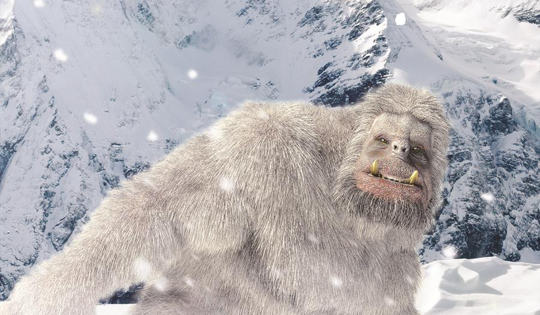

{% extends '_layout.html' %}
{% block title %}Cryptid Catalog | Encyclopedia{% endblock %}
{% block body %}
- BACK
- ABOMINABLE SNOWMAN
- Type: Arctic, Terrestrial

- The abominable snowman is a giant, hairy, white, apelike beast. Rumored to live in the arctic regions of the world, the abominable snowman torments and scares off any living creatures that enter its territory.
{% endblock %}